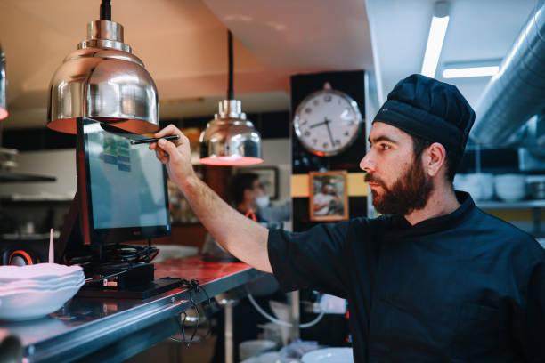
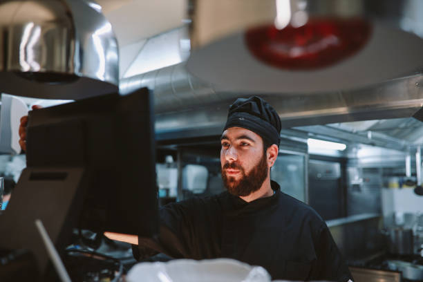
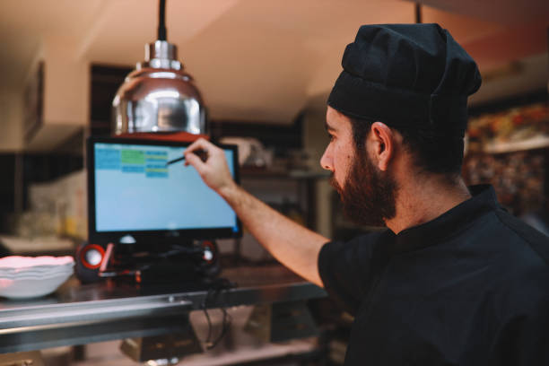

El mesero selecciona una mesa libre en su móvil, elige los platos del catálogo categorizado y anota preferencias especiales (ej. "Término 3/4").

Al confirmar, la orden aparece inmediatamente en el Monitor de Cocina (KDS), organizada en una columna de "Pendientes".

El cocinero actualiza el estado del plato de "En Preparación" a "Listo", disparando una notificación en tiempo real al dispositivo del mesero.
Al finalizar, el sistema calcula automáticamente el total de la cuenta. Se selecciona el método de pago (Efectivo, Tarjeta, Yape) y la mesa vuelve a estar libre.
"Ya no corro a la cocina; la aplicación me avisa directamente a mi pantalla cuando el plato está listo para recoger."
"Veo todas las órdenes ordenadas por prioridad en una pantalla táctil, sin tener que descifrar letras ilegibles ni lidiar con papel mojado o perdido."
"El mesero no se despega del salón. Sé que mi pedido entra en proceso rápido y puedo pedir la cuenta exacta sin demoras."
Habla directamente con un experto de nuestra agencia a través de WhatsApp y comienza un verdadero cambio hoy mismo.
Iniciar chat ahora